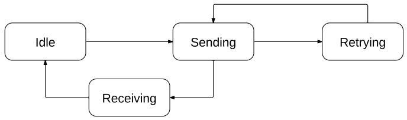

Introducción
Uno de los problemas con que se enfrentan las aplicaciones informatícas y en especial las aplicaciones móviles, son los posibles fallos de conexión con los servidores. DataOnOff viene a dar soporte para sistemas con conexión intermitente online/offline. Esta funcionalidad permite al usuario trabajar en el dispositivo interactuando con una base de datos remota realizando las operaciones para las que esté destinada la aplicación independientemente de si existe en ese momento conexión con la base de datos. Para ello el terminal dispone de una copia de un fragmento de la base de datos remota. Cuando el terminal no tenga conexión, el usuario trabaja con la base de datos del terminal. Cuando recupere la conexión el terminal sincroniza las operaciones realizadas en la base de datos del terminal con la base de datos remota. Todo ello se realiza de forma transparente para el usuario.
Descripción
DataOnOff provee la funcionalidad que permite al usuario trabajar en el terminal interactuando con datos remotos, realizando las operaciones para las que esté destinada la aplicación, independientemente de si existe en ese momento conexión o no. Para ello el terminal dispone de una copia de un fragmento de los datos remotos. Cuando el terminal no tenga conexión, el usuario trabaja con los datos del terminal. Cuando recupere la conexión el terminal sincroniza las operaciones realizadas en el terminal. Todo ello se realiza de forma transparente para el usuario.
Para la demostración del funcionamiento de DataOnOff, emplearemos un framework de desarrollo de aplicaciones móviles, con una gran extensión de uso y construido siguiendo las directrices Open Source. PhoneGap permite desarrollar aplicaciones mediante Javascript, Css (Cascade Style Sheets) y HTML. El API de DataOnOff es el encargado de conectar con la base de datos remota y mediante invocaciones HTTP con el formato de datos JSON para sincronizar la base de datos.
En caso de que la conexión no sea posible se guarda la información en una base de datos local en el terminal. Esta base de datos esta implementada mediante el motor SQLite, motor de base de datos autocontenido con un uso preferencial en terminales móviles. SQLite es Open Source y tiene una licencia Public Domain.
El diagrama de estados que tiene la librería para los envíos es el siguiente:
El esquema funcional de alto nivel del sistema es el siguiente:
Contribuir
Si quieres contribuir estas invitado a hacerlo.
- Clona el repositorio git del proyecto.
- Realiza los cambios que desees aportar.
- Finalmente comparte tus cambios con la comunidad utilizando GitHub.
Descargas
Puedes descargar el proyecto y los demás recursos a través de los enlaces de la parte superior de la página
Licencia de uso
DataOnOff está licenciado bajo Apache License, Version 2.0